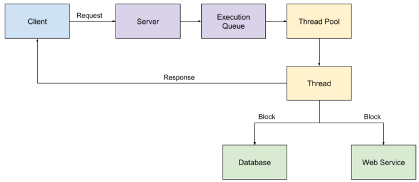
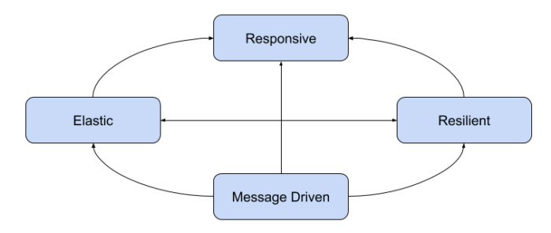
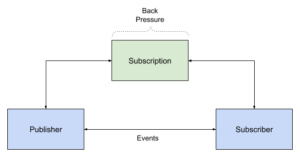
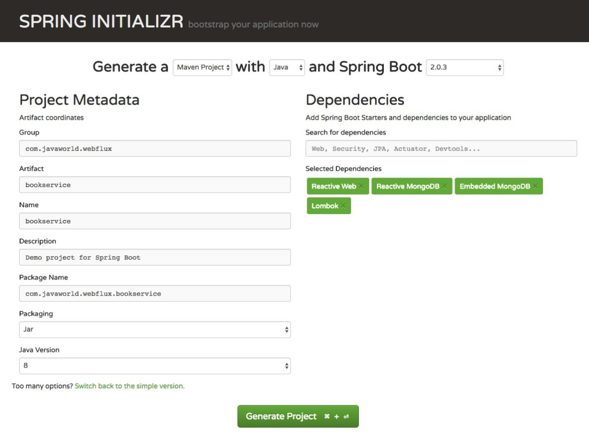

Spring Series Part 3, Spring WebFlux
Spring WebFlux introduces reactive web development to the Spring ecosystem. This article will get you started with reactive systems and reactive programming with Spring. First you’ll find out why reactive systems are important and how they’re implemented in Spring framework 5, then you’ll get a hands-on introduction to building reactive services using Spring WebFlux. We’ll build our first reactive application using annotations. I’ll also show you how to build a similar application using Spring’s newer functional features.
Reactive systems and Spring WebFlux
The term reactive is currently popular with developers and IT managers, but I’ve noticed some uncertainty about what it actually means. To get clearer on what reactive systems are, it’s helpful to understand the fundamental problem they’re designed to solve. In this section we’ll talk about reactive systems in general, and I’ll introduce the Reactive Systems API for Java applications.
Scalability in Spring MVC
Spring MVC has earned its place among (在…中) the top choices for building Java web applications and web services. Spring MVC seamlessly (无缝地) integrates (使合并) annotations into the robust (强健) architecture of a Spring-based application. This enables developers familiar with Spring to quickly build satisfying, highly functional web applications. Scalability (可扩展性) is a challenge for Spring MVC applications, however. That is the problem Spring WebFlux seeks to address.
Blocking vs non-blocking web frameworks
In traditional web applications, when a web server receives a request from a client, it accepts that requests and places it in an execution queue. A thread in the execution queue’s thread pool then receives the request, reads its input parameters, and generates a response. Along the way, if the execution thread needs to call a blocking resource — such as a database, a filesystem, or another web service — that thread executes the blocking until the external resource responds, which causes performance issues and limits scalability. To combat these issues, developers create generously sized thread pools, so that while one thread is blocked another thread can continue to process requests. Figure 1 shows the execution flow for a traditional, blocking web application.

Non-blocking web frameworks such as NodeJS and Play take a different approach (方法). Instead of executing a blocking request and waiting for it to complete, the use non-blocking I/O. In this paradigm (范例), an application executes a request, provides code to be executed when a response is returned, and then given its thread back to the server. When an external resource returns a response, the provided code will be executed. Internally (内部的), non-blocking frameworks operate using an event loop. Within the loop, the appliation code either provides a callback or a future containing the code to execute when the asnchronous (异步) loop completes.
By nature, non-blocking frameworks are event-driven. This requires a different programming paradigm and a new approach to reasoning (推理) about how your code will be executed. Once you’ve warpped (变形的) your head arround it, reactive programming can lead to very scalable applications.
Callbacks, promises, and futures
In early days, JavaScript handled all asynchronous functionality via callbacks. In this scenario, when an event occurs (such as when a response from a service call becomes available) the callback is executed. While callbacks are still prevalent, JavaScript’s asynchronous functionality has more recently moved to promises. With promises, a function call returns immediately, returning a promise to deliver the results at a future time. Rather than promises, Java implements a similar paradigm using futures. In this usage, a method returns a future that will have a value at some time in the future.
Reactive programming
You may have hear the term reactive programming related to web development frameworks and tools, but what does it really mean? The term as we’ve come to know it originated from the Reactive Manifesto, which defines reactive systems as having four core traits (特征):
- Reactive systems are responsive, meaning that they respond in a timely manner (及时的), in all possible circumstances (环境). They focus on providing rapid (瞬间) and consistent response times, establishing (建立) reliable upper bounds (上边界) so they deliver (兑现) a consistent quality of service
- Reactive systems are resilient (能复原的), meaning that they remain reponsive in the face of failure. Resilience is achieved (实现) by the techniques of relication (同步复制), containment (包容), isolation (隔离性), and delegation (委派). By isolating application compoents from each other, you can contain failures and protect the system as a whole
- Reactive systems are elastic (灵活的), meaning that they stay responsive under varying workloads. This is achieved by scaling application components elastically to meet the current demand (需要)
- Reactive systems are message-driven, meaning that they rely on asynchronous message passing between components. This allows you to create coupling (耦合), isolation, and location transparency (透明度)
Figure 2 shows how these traits (特征) flow together in a reactive system.

Characteristics of a reactive system
Reactive systems are built by creating isolated components that communicate with one another asynchronously and can scale quickly to meet the current load. Components still fail in reactive systems, but there are defind actions to perform as a result of the failure, which keeps the system as a whole functional and responsive.
The Reaactive Manifesto is abstract, but reactive applicaitons are typically characcterized by follwoing components or techniques:
- Data streams: A stream is a squence of events ordered in time, such as user interactions, REST service calls, JMS messages, and results from a database
- Asynchronous: Data stream events are captured asychronously and your code defines what to do when an event is emiited, when an error occurs, and when the stream of events has completed
- Non-blocking: As you process events, your code should not block and preform synchronouss calls; intead, it should make asychronous calls and respond as the results of those calls are returned
- Back pressure: Components control the number of event and how often they are emitted (发出). In reactive terms, your component is referred to as the subscriber and events are emitted by a pushlier. This is important because the subscriber is in control of how much data it receives and thus will not overburden (超载) itself
- Failure message: Instead of components throwing exceptions, failures are sent as message to a handler function. Whereas throwing exceptions breaks the stream, defining a function to handle failures as the occur does not
The Reactive Streams API
The new Reactive Stream API was created by engineers from Netflix, Pivotal, Lightbeand, RedHat, Twitter, and Oracle, among others. Pushished in 2015, the Reactive Streams API is now part of Java 9. It defines four interfaces:
- Publisher: Emits a sequence of events to subscriber
- Subscriber: Recevies and processes events emitted by a Publisher
- Subscription: Defines a one-to-one relationship between a Publisher and a Subscriber
- Processor: Represent a processing stage consisting of both a Subscriber and a Publisher and obeys the contracts of both
Figure 3 shows the relationship between a Publisher, and Subscription.

In essence (本质), a Subscriber creates a Subscription to a Publisher and, when the Publisher has available data, it sends an event to the Subscriber with a stream of elements. Note that the Subscriber managers its back pressure (挤压) inside its Subscription (订阅) to the Publisher.
Now that you know a litte bit about reactive systems and the Reactive Streams API, let’s turn our attention to the tools Spring uses to implement reactive systems: Spring WebFlux and the Reactor library.
Project Reactor
Project Reactor is a third-party framework based on Java’s Reactive Streams Specification, which is used to build ono-blocking web applications. Project Reactor provides two publishers that are heavily used in Spring WebFlux:
- Mono: Returns 0 or 1 element
- Flux: Returns 0 or more elements. A Flux can be endless, meaning that it can keep emitting elements forever, or it can return a sequence of elements and then send a completion notification when it has returned all of its elements
Monos and fluxs are conceptually similar to futures, but more powerful. When you invoke a function that returns a mono or a flux, it will return immediately. The results of the function call will be delivered to you through the mono or flux when they become available.
In Spring WebFlux, you will reactive libraries that return monos and fluxes and your controllers will return monos and fluexs. Because these return immediately, your controllers will effectively give up their threads and allow Reactor to handle responses asynchronously. It is improtant to note that only by using reactive libraries can you WebFlux services stay reactive. If you use non-reative libraries, such as JDBC calls, your ocde will block and wait for those calls to complete before returning.
Reactive programming with MongoDB
Currently, there aren’t many reactive database libraries, so you may be wondering if it’s practical to write rective services. The good news is that MongoDB has reactive support and there are a couple of third-party reactive database drivers for MySQL and Postgres. For all other use cases, WebFlux provides a machanism for executing JDBC calls in a reactive manner, albeit using a secondary thread pool that makes blocking JDBC calls.
Get started with Spring WebFlux
For our first how-to example, we’ll create a simple book service that persists books to and from MongoDB in a reactive fashion.
Start by navigating to the Spring Initializr homepage, where you’ll choose a Maven Project with Java and select the most current release of Spring Boot (2.0.3 at time of this writing). Give your project a group name, such as “com.javaworld.webflux”, and an artifact name, such as “bookservice”. Expand the Switch to the full version like to show the full list of dependencies. Select the following dependencies for the example application:
- Web -> Reactive Web: The dependency inlucdes Spring WebBlux
- NoSQL -> Reactive MongoDB: This dependency inluceds the reactive drivers for MongoDB
- NoSQL -> Embedded MongoDB: This dependency allows us to run an embedded version of MongoDB, so there is no need to install a separate instance. Usually this is used for testing, but we’ll include it in our release code to avoid installing MongoDB
- Core -> Lombok: Using Lombok is optional as you do not need it to build a Spring WebFlux. The benefit of using Project Lombok is that is enables you to add annotations to classes that will automatically generate getters and setters, constructors, hashCode(), equals(), and more.
When you’re finished you should see something similar to Figure 4.

Pressing Generate Proejct will trigger the download of a zip file containing your proejct source code. Unzip the download file and open it in your favorite IDE. If you’re using IntelliJ, choose File and then Open, and navigate to the directory where the download zip file has been decompressed.
You’ll find that Spring Initializr has generated two important files:
- A Maven pom.xml file, includes all necessary dependencies for the application
- BookserviceApplicataion.java, which is the Spring Boot starter class for the application
Listing 1 shows the contents fo the generated pom.xml file.
Listing 1. Maven pom.xml for the Spring WebFlux example application
1 | <?xml version="1.0" encoding="UTF-8"?> |
Application dependencies
The <parent> node references version 2.0.3.RELEASE of the spring-boot-starter-parent POM file. The parent POM file ensures that all dependency versions are compatible with this version of Spring Boot. These dependencies include:
- spring-boot-starter-webflux: Packs everything you need to run a WebFlux application, including spring-web (which gives you all of the Spring MVC capabilities) and Netty, which will be our reactive web server, plus a lot more
- spring-boot-starter-data-mongodb-reactive: Includes the MongoDB drivers, reactive support for MongoDB, and Spring Data to make writing persistence (坚持) code easier
- de.flapdoodle.embed.mongo: Includes an embedded MongoDB instance. By default this dependency will be scoped to “test” so that you can write tests that run against an embedded MongoDB instance and then connect to a standalone MongoDB instance in production. For the purpose of this example I removed the test scoping so that we can run our book service against this embedded MongoDB instance
- lombok: Adds annotation niceties for generating getters and setters, constructors, and forth to the application’s model classes
- spring-boot-starter-test: Includes Spring testing utilities as well as JUnit and Mockito
- reactor-test: Includes testing utilities for testing the Reactor engine, which is used by Spring WebFlux for reactive functionality
The Spring Boot starter class
Listing 2 shows the BookserviceApplication.java file.
Listing 2. BookserviceApplication
1 |
|
The BookserviceApplication is annotated with the @SpringBootApplication annotation. @SpringBootApplication is a convenience (方便) annotation that encompasses (包含) the following annotations:
- @EnableAutoConfiguration enables auto-configuration of the Spring application context, attemping to guess and configure beans that you are likely to need. Auto-configuration classes are usually applied based on your CLASSPATH and the beans you have defined. For example, when you include the embedded MongoDB dependency in your CLASSPATH, Spring will automatically create an instance in memory and wire it into the application context
- @SpringBootConfiguration identifies this class as containing the Spring Boot configuration
- @ComponentScan directs Spring to scan the CLASSPATH, in the current package and all sub-packages, for Spring components. In short, this allows you to create a web package and add a @Controller, which Spring will find and make available to the application
The BookserviceApplication itself defines a main() method that delegates to the SpringApplication.run() method, which starts the application.
Using Spring WebFlux with annotations
In order to build our book service we need to define the following classes and interfaces:
- Book: A model class representing a book in our service
- BookRepository: A Spring Data MongoDB interface telling Spring Data to generate persistence code for books to and from MongoDB
- BookService and BookServiceImpl: The “business” service used to interact with the BookRepository to persist book to and from MongoDB. In this example, a service is not necessary and we could place calls to the BookRepository directly in our controller. When building Spring applications it is recommended to create this layer as a business interface between your controllers and persistence repository, however. The business interface enables you to change your repository — such as moving to an SQL-based database or calling another web service — without impacting your controllers.
- BookController: The web controller that will receive web requests and return reactive reponse (Monos and Fluxs)
Example application source code
Listing 3 shows the source code for our model class, Book.java
Listing 3. Book.java
1 |
|
The Book class is a simple POJO that contains an ID, title, and author. It is annotated with the @Document annotation, which identifies it as a MongoDB document. Spring Data will map documents to collections in MongoDB. THe next three annotations — @Data, @NoArgsContructor, and @AllArgsConstructor — are Lombok annotations. @Data includes the following capabilities:
- Generates getters and setters for all fields; setters are only generated for non-final properties
- Generates a required arguments constructor
- Generates a ToString() method
- Generates equals() and hashCode() methods that uses all non-transient (非暂态) fields
In order to work with Spring Data, we need a no-argument constructor so I added @NoArgsContructor. For testing purposes I also added an all-argument constructor, @AllArgsConstructor.
As mentioned above, Lombok is not required and you can simply implement getters, setters, and constructors to the class as you normally would do.
Listing 4 shows the source code for the BookRepository interafce.
Listing 4. BookRepository.java
1 | public interface BookRepository extends ReactiveMongoRepository<Book, String> { |
The BookRepsiotry is a Spring Data interface, meaning that you define the interface and Spring Data weill generate the code that implements that interface. Specifically, BookRepository extends teh ReactiveMongoRepository, which defines the following reactive methods (remember that these are methods that return either monos or fluxs):
Mono<Book> save()Flux<Book> saveAll()Flux<Book> findById()Mono<Boolean> existsById()Flux<Book> findAll()Flux<Book> findAllById()Mono<Long> count()Mono<Void> delete()Mono<Void> deleteById()Mono<Voidd> delteAll()Flux<Book> insert()
The query methods that return one element (such as findById()) return Mono<Book>. The methods that return more than one elements (such as findAll()) return Flux<Book>. It is interesting to note that the delete methods return a Mono<Void>. Mono<Void> means that there is no return type, but when the operation finishes it will publish a completion notification. Recall that these are publishers, so your code, or Spring WebFlux itself, will ultimately define functionality to execute when a message is published to its subscribers.
The BookRepository is defined with two generic parameters: Book, which is the type of document that the repository managers, and String, which is the type of the primary key (the Book’s id field). Your code can use the BookRepository methods to execute asynonchroous queries against MongoDB.
Listing 5 and 6 show the source code for the BookService and BookServiceImpl, respectively.
Listing 5. BookService.java
1 | public interface BookService { |
Listing 6. BookServiceImple.java
1 |
|
Services represent business functionality and are identified in Spring using the @Service annotation. In this example, business functionality simply delegates to the underlying (隐含的) repository. If you needed to perform more complex logic on the queries or on the objects being persisted, this is where you would do it.
Listing 7 shows the source code for the BookController class.
Listing 7. BookController.java
1 |
|
About the code
If you’re already familiar with Spring MVC, you’ll notice that the Spring WebFlux application code looks remarkably familiar. The only difference is that all controllers and services return reactive types, namely monos and fluxes. We’ve also employed a reactive MongoDB driver instead of a nonreactive driver. While the code is familiar, the implementation is quite different. Under the hood, Spring WebFlux will invoke your handler method, capture the reactive reponse, and then leverage Reactor to wait for the response to be published, all asynchronously.
Here are some points to note about the example application:
BookControlleris annotated with the@RestControllerannotation, which is a convenience annotation. This annotation includes the@Controllerannotation, which is used to identify a class that handles web request, and@ResponseBody, which indicates that method return values should be bound to the web response bodygetBookById()method, which is annotated with the@GetMappingannotation.@GetMappingis a convenience annotation for@RequestMapping(method = RequestMethod.GET). It handles the URI path:/book/{id}, where the id is the value retrieved from the path and passed as the@PathVariablein the method call. The implementation simply delegates to the BookService’sfindById()method. Note that this method returns aMono<Book>, which again is a publisher that will provide WebFlux with a Book instance when it becomes available, ultimately from the reactive MongoDB call tofindById().getAllBooks()method handles the/booksURI path and delegates to the BookService’sfindALl()method. In this case it returns aFlux<Book>, which is a pulisher that send a stream of Books to Spring WebFlux. When all books have been retrieved from MongoDB, the reactive MongoDBfindAll()method will publish a completion notification telling WebFlux that it is finished. WebFlux can then send the response back to the caller- Finally, the
createBook()method is annotated with the@PostMappingannotation, which is a convenience annotation for@RequestMapping(method = RequestMethod.POST).@PostMappinghandles the/bookURI path. The@RequestBodyannotation, included when we added@RestControllertells WebFlux to convert the object received from the caller into a Book instance. ThecreateBook()method delegates to the BookService’ssave()method and then returns aMono<Book>that publishes the newly created Book.
Three styles of denpendency injection
The BookController uses contructor injetcion to autowire a BookService into itself. Recall that Spring supports three types of denpendency injection:
- Constructor injection: when a Spring-managed bean defines a constructor that accepts another Spring-managed bean, Spring will automatically retrieve an instance of that bean from the application context and pass it to the constructor
- Setter injection: when a Spring-managed bean defines a setter method that accepts another Spring-managed bean, Spring will likewise find it in the application context and invoke the setter method
- @Autowired: when a Spring-managed bean defines a field annotated with the @Autowired annotation, Spring will automatically set the value of the filed
Run the application
You can run your new service by exeucting the following command from the root directory of your project:1
mvn spring-boot:run
Now take out your favorite REST service testing tool, like Poster, or execute the following cURL commands on your command-line. See the responses below each cURL command:1
2
3
4
5
6
7
8$ curl --header "Content-Type: application/json" --request POST --data '{"title": "Book 1", "author": "Mr Author"}' http://localhost:8080/book
{"id":"5b2ea197c0f951f7354085d7","title":"Book 1","author":"Mr Author"}
$ curl --header "Content-Type: application/json" --request POST --data '{"title": "Book 2", "author": "Other Author"}' http://localhost:8080/book
{"id":"5b2ea1b0c0f951f7354085d8","title":"Book 2","author":"Other Author"}
$ curl http://localhost:8080/books
[{"id":"5b2ea197c0f951f7354085d7","title":"Book 1","author":"Mr Author"},{"id":"5b2ea1b0c0f951f7354085d8","title":"Book 2","author":"Other Author"}]
$ curl http://localhost:8080/book/5b2ea197c0f951f7354085d7
{"id":"5b2ea197c0f951f7354085d7","title":"Book 1","author":"Mr Author"}
Functional reactive services with Spring WebFlux
Spring WebFlux application can be built using either Spring MVC annotations (which you just saw) or functional programming techniques. Functional programming has many benefits, such as immutable data objects, inherent thread safety, the ability to pass functions to other functions, and the ability to program declaratively rather than imperatively (meaning that you describe the problem you are solving, not hte steps that define how to solve the problem).
Pure functions — or functions that provide the same result every time they are given the same input — limit side-effects, which makes testing easier. They also allows for easy parallelization and caching. If you haven’t taken the time to start learning functional programming, I encourage you to do so; It will change how you approach and solve problems.
Arjen Poutsma, a mamber of the Spring WebFlux team, posted a vieo on YouTube entitled “New in Spring Framework 5.0: Functional Web framework” that describes the motivation behind building functional web applications and how Spring WebFlux can be used functionally. In short, he argues for more library, less framework, meaning that WebFlux can be used as a library that leaves you in control of your web application. This is an efficient alternative to utilizing the full Spring framework, which is the approach we took in the previous section.
We’ll conclude this tutorial by using Spring WebFlux to build another BookHandler application, this time using functional techniques.
Router and handler
Our functional Spring WebFlux application will be based on two main components, a router and a handler. The router is responsible ofr routing HTTP requests to handler functions. Handler functions are responsible for executing business functionality and building responses.
Listing 8 shows the source code for the BookHandler class.
Listing 8. BookHandler.java
1 |
|
The BookHandler is annotated with @Component, a generic annotation that identifies the class as being a Spring-managed bean. Spring will discover this component when it does its component scan and add it to the application context. This is not a controller, but rather a standard Spring bean that will be wired into the BookRouter, defined below.
The functions in the BookHandler return Mono<ServerResponse>. This component is a litte different from the BookController built in the previous section, which returned Mono<Book> and Flux<Book>. When building a handler function, you are responsible for building the response that will ultimately be returned to the caller. All methods are requried to return a Mon<ServerResponse>, even if the body of the response contains a Flux.
Each method is passed a ServerRequest argument, which provides access to request parameters, such as path variables, query parameters, and, in the case of the save() method, the body of a POST or PUT.
In order to build a response body, we construct it using a BodyBuilder. The ok() method returns a BodyBuilder with an HTTP status code of 200; it is a convenience method for status(HttpStatus.OK). The BodyBuilder interface defines methods for setting the content type, content length, as well as HTTP header values. The body() method sets the contents to be returned to the caller and returns a Mono<ServerResponse>.
Important methods: save() and flatMap()
The method in this class that deservers special attention is the save() method. First, in order to deserialize the body payload to a class instance, we invoke the bodyToMono() method. This mehtod returns a Mono<Book>, which is a publisher that will provide a Book instance asynchronously when it is available. With the Mono<Book> in hand, we construct the response using the ok() method, as usual, and then the body() method is implemented as folows:1
fromPublisher(book.flatMap(bookService::save), Book.class)
The fromPbulisher() method reutrns a BodyInserter, which the body() method expects, from a publisher function and the class of the object that will be published, Book.class in this case. The publisher function is passed the following:1
book.flatMap(bookService::save)
You’re probably already familiar with the Java 8 map() funciton, which converts every input item in a stream (or in the Mono in this case) into another object. The Java 8 flatMap() function is similar, but it “flattens” the response. For example, if we were constructing a list of objects and the map function returned am embedded list, rather than a list of lists, the flatMap() funciton would return a single list that contained all of the elements in all embedded lists.
We can read this function as follow: for each Book in the book object, which is a Mono so there will only be one, call the BookService’s save() method, and return the result of BookService::save to the caller (fromPublisher() in this case) as a single Mono object (not a Mono<Mono<Book>>). The faltMap() function takes care of flattening embedded Monos into a single Mono.
Example application code
Listing 9 show the source code for the BookRouter class.
Listing 9. BookRouther.java
1 |
|
The BookRouter class is annotated with @Configuration, which is a Spring annotation that identifies a class as a configuration class whose method create other Spring beans. In this example, the router() method creates a bean of type RouterFunciton<ServerResponse>. Router functions are responsible for translting HTTP routes (HTTP verb and URI path) into handler functions. For example, the first route reads: if there is a request of type GET for the URI path /fbooks and a media accept type of APOLICATION_JSON, then invoke the BookHandler’s findAll() method.
The syntax might look a little strange, so let’s take it apart. First, consider the GET() method:1
GET("/fbooks").and(accept(MediaType.APPLICATION_JSON)), handler::findAll
The GET() method is statically imported from the RequestPredicates class and reutrns a RequestPredicate instance. A predicate is a boolean-valued function with a test() method that evaluates the predicate and returns true or false if the predicate’s conditions are met. A RequestPredicate evaluates a ServerRequest to determine whether or not this route should handle the request. So our goal is to define the criteria under which our handler function should be called.
GET() is a convenience method for
1 | method(HttpMethod.GET).and(path(String Pattern)) |
This means that the RequestPredicate will compare the HTTP verb in the ServerRequest to HttpMehod.GET and the path to the specified URI pattern. We then chain accept(MediaType.APPICATION_JSON) to the predicate using the and() method, which is a standard Predicate funciton that evaluates two prediates using AND boolean logic. The accept() method adds a condition to the predicate that verifies the “Accept” HTTP header against the provided media type. In the end, the handler::findAll method will be invoked if the following conditions are true:
- The HTTP verb is GET
- THe URI path is
/fbooks - The HTTP “ACCEPT” header is “applicaiton/json”
The RoutherFunction::route method returns a RouterFunction that allows you to add additional routes by invoking the addRoute() method. As you can see, we leverage this capability to chain together several different routes: GET with an id request parameter, POST and DELETE.
The only other magic in the BookRouter::route method is the Spring injection of the BookHandler. The router() method is annotated with @Bean, which means that it returns a Spring-managed bean. When Spring invokes this method it will see that requires a BookHandler argument. Having already discovered the BookHandler (annotated with @Component), and having added it to the application context, it will pass the Spring-managed BookHandler to the route() method.
In summary, the BookRouter::route create a RouterFunction, which is composed of several router functions that define the conditions for which specific handler functions should be invoked.
Run and test the application
You can test this code by starting the Spring Boot application with the following command:1
mvn spring-boot:run
Now you have two sets of end-points: /book uses the BookController and /fbook uses the functional BookRouter and BookHandler. The following are sample cURL commands to invoke these services:1
2
3
4
5
6
7
8
9
10
11
12$ curl --header "Content-Type: application/json" --request POST --data '{"title": "Book 1", "author": "Author"}' http://localhost:8080/fbook
{"id":"5b394748aaac8a7c67f94367","title":"Book 1","author":"Author"}
$ curl --header "Content-Type: application/json" --request POST --data '{"title": "Book 2", "author": "Author"}' http://localhost:8080/fbook
{"id":"5b39474daaac8a7c67f94368","title":"Book 2","author":"Author"}
$ curl http://localhost:8080/fbooks
[{"id":"5b394748aaac8a7c67f94367","title":"Book 1","author":"Author"},
{"id":"5b39474daaac8a7c67f94368","title":"Book 2","author":"Author"}]
$ curl http://localhost:8080/fbook/5b39474daaac8a7c67f94368
{"id":"5b39474daaac8a7c67f94368","title":"Book 2","author":"Author"}
$ curl --header "Content-Type: application/json" --request DELETE http://localhost:8080/fbook/5b39474daaac8a7c67f94368
$ curl http://localhost:8080/fbooks
[{"id":"5b394748aaac8a7c67f94367","title":"Book 1","author":"Author"}]
Conclusion
Spring WebFlux is Spring’s reactive web framework that uses the Reactor library to asynchronously manage web requests. I start this article by reviewing reactive systems and the Reactive Streaming API, and described the problems they’re designed to solve. I then showd you two ways to create a Spring WebFlux application: the tradition-based approach and the fuctnional approach. Spring WebFlux was introduced in Spring framework 5, and is new to the Spring ecosystem. It will undoubtedly continue to evolve. Still, it is already a powerful framework and library very scalable reactive web applications.